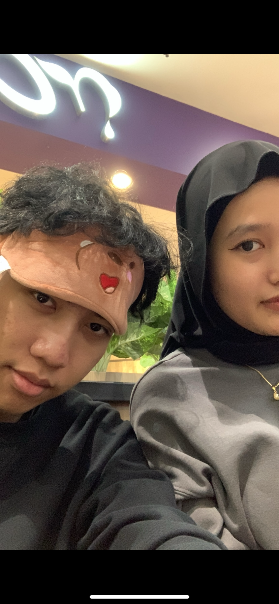
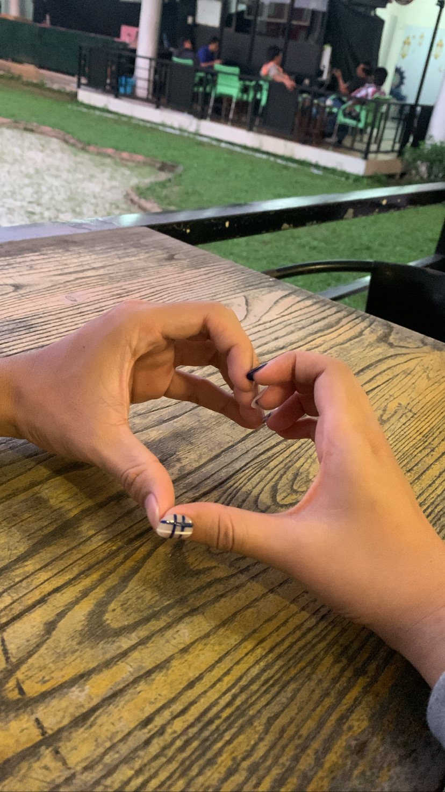
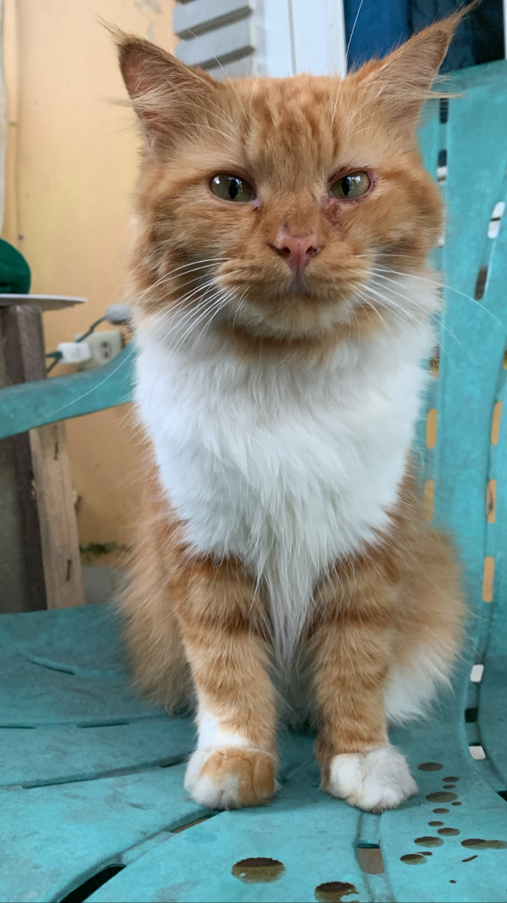
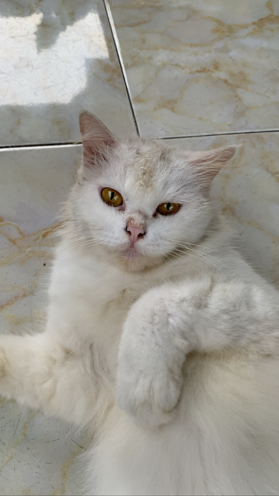

ini pertama kali nya aku kebangka dan kepantai :') diajak kamu , dan ini foto pertama yg ada digaleri aku sama kamu din :')

ini foto pertama aku pulang dari bangka :')

ini foto ke 2 aku pergi kebangka , dan kita kepantai lagi,ohiya kita minum es kelapa yakkk :')
aku juga inget foto ini , kita ketemu di jakarta , kita main keminiso ,beli chat time :')
Ini foto kamu sama aku terakhir sebelum aku pulang kejakarta
ini foto kucing kamu,yg pertama kali aku liat , aku kangen dia dinda,semoga koju selalu sehat yaak :')
selain aku yg nemenin disetiap waktu kamu,ini kucing putih yg selalu nemenin kamu setiap harinya din, bahkan sampai detik ini ya :') '
Play Music ini :")
Dindaaa........ <3
aku sekali lagi minta maaf ya tentang masalah yg udah aku buat ,tentang telat minta maaf ke kamu dan silent treatment atau apapun itu , aku bener2 ngakuin kesalahan yg udah aku buat , aku nyesel udah buat kamu jadi kecewa
mulai sekarang aku kasih stir nya ke kamu ya din , aku udah gamau megang stirnya lagi
kamu yg atur skrng perjalanan hubunggannya kedepannya gimana:")
aku udah bingung ternyata din, buat ngatur gimana kedepannya hubunggan ini , aku pengen di samping aja , ngeliat kamu yg pegang stirnya dan ngeliat kearah mana kamu mau bawa hubungan ini
aku juga udah bingung gimana cara mertahaninnya lagi kalau kaya gini, aku serahin ke kamu yaa dinda :")
aku udah coba berbagai cara pertahanin hubungannya biar tetep bisa sama kamu, mulai dari minta maaf,coba untuk ngalah,coba untuk rayu kamu,coba juga untuk tetep kabarin kamu , dan juga coba nurunin ego aku ,ketitik paling rendah
udah berbagai cara aku coba ternyata 0 hasil nya , aku jadi merasa ga di hargain , diinjek2 juga harga diri aku sebagai laki2 sama kamu :")
sesuai yg pernah kamu bilang
ego+ego = hancur
ego+nurunin ego = ??? hancur juga ?
jadi menurut kamu yg benar kaya gimana din ? :')'
apa ini masalah yg aku buat bener2 gabisa dimaafin din ?
kalau memangnya ia
terus kenapa dimasalalu setiap masalah yg kamu buat selalu aku maafin ?...... (apapun itu masalahhnya)
masalah yg menurut ku cukup serius (masa lalu kamu yg sempat masuk kedalam hubungan kita )
-yg kamu dibeliin makan sama dia waktu kamu sakit
-foto bareng untuk tugas kuliah
sakit sih din ngeliat nya , waktu itu juga aku cuman nyengar nyengir aja merhatiin kamu digituin sama masalalu kamu:)
dan pada saat itu akhirnya kita debat , yg ngalah dan nurunin ego juga tetep aku juga.
tapi masi bisa aku maafin ... :""") "
aku give up din:") ,ternyata selain kamu punya wajah yg cantik , ego kamu ternyata lumayan tinggi ya , aku ga expect bakal setinggi ini dindaa :"")
kalau kamu mau ngatain aku "cemen,gabisa usaha lagi ngadepin cwe kaya aku" .......gapapa din katain aja :")"
tapi yg harus kamu inget , coba kita tukeran , aku jadi kamu yg ego nya tinggi , dan kamu yg jadi posisi aku skrng ??? apa bisa dinda? :")
maafin juga ya kalau mulai besok aku udah ga konsisten ngabarin kamu setiap hari nya,yg selalu bilang " aku berangkat dulu ya sayang <3 " , "I Love you <3 " , " ngirim foto " ,"aku pulang dulu ya sayang" :"""")))
untuk kedepannya , kemungkinan aku gabakal ngabarin kamu lagi din,aku ga akan nanya2 kamu lagi , udah cukup kayanya aku mikirin kamu setiap hari nya :"")
mikirin ketika kamu badmood,mikirin ketika kamu seneng,mikirin ketika kamu marah sama aku,mikirin ketika aku lagi jauh sama kamu,mikirin juga ketika aku mau ketemu kamu din:)
oh iya aku coba flashback sedikit masa masa indah dan sedih bareng kamu ya :') , soalnya setiap lagi berantem sama kamu , aku selalu flashback moment indah sama kamu din :") ,
Dinda rahma shafira orang pertama yg masuk kedalam hidup aku , tepatnya 6 agustus 2022 <3
waktu itu Pertama kalinya aku bisa ketemu langsung di depan kamu din.... aku excited banget :") btw itu pertama kali dalam seumur hidup aku ketemu pasangan aku langsung didepannya :")
mulai dari sampai dibandara, tepatnya dibandara jakarta aku inget banget , saking excitednya kamu sama aku ,divideo call dari malam sampe pagi , kamu sampe gatidur wkkwkw ,terus akhirnya aku info kalau aku udah sampai , dan aku bilang kekamu otw , kamu langsung jemput aku dihotel ,terus kita jalan2 kepantai , makan bareng sama kamu,ketemu keluarga kamuu,dan akhirnya aku pulang kejakarta lagi , aku seneng banget din :')
terus di tahun selanjut nya aku usahain lagi buat bisa ketemu sama kamu ,kita sama sama excited lagi din untuk ketemu,eh ada moment lucu , ga sengaja , aku lagi jumatan ketemu sama bang iqball ya hehe akhirnya di anterin sampe kerumah kamuuuuuu
terus aku ketemu kamu lagi deh , kita jalan2 lagi kepantai , makan2 ayce , makan mie ayam,nonton film,beli estebu,beli buah, ketemu keluarga kamu lagiii,terus ketemu temen2 kamu din , kamu kenalin aku ketemen2 kamuu , kita foto2 jugaa ,dan pada saatnya aku pulang........... kamu sedih karna aku pulang kejakarta , jujur aku dipesawat juga sedih din harus berjarak lagi sama kamu:'),
beberapa bulan kemudian ,kamu tiba2 bilang mau kejakarta ,wah aku makin excited bisa ketemu kamu lagi , akhirnya aku coba cari waktu kosong untuk bisa ketemu sama kamu , akhirnya kita jalan2 yaa, kita sama2 lagi, makan2 lagi , ketemu sama om tante kamuu disana , seruu yaa hari terakhir tepatnya , malam terakhir ketemu sama kamu , sedih ya kita harus pisah lagi :") dan akhirnya kamu pulang din kebangkaa ....
aku seneng dinda bisa kenal dan ketemu keluarga kamu,temen2 kamu,kucing2 kamu,mereka semua baik sama aku,salam ya buat mereka dari aku :""""""""")
tahun selanjutnya ........ maafin aku ya kalau aku blom bisa ketemu kamu ditahun ini (2024) bukan karna aku gamau ketemu kamu , banyak faktor yg gabisa ngebuat aku bisa ketemu kamu , bukan tentang waktu aja..... yg lebih aku apresiasiin lagi tentang kamu , "kamu ngerti itu" :')
nah di tahun 2025 ini , kamu wisuda ya din hebatt,selamat ya dinda :') kamu hebat udah bisa sejauh ini , aku ikut seneng dindaa :") .oh iya waktu itu kayanya aku sempat bilang ,bakal dateng ke wisuda kamu ya :") tapi din .... kalau kita keadaannya kaya ginii gimana??
aku cuman mau kasih tau kekamu , setelah kamu wisuda , ini yg benar2 namanya kehidupan ,kamu bakal ketemu orang2 baru, ketemu orang baikjuga , ketemu orang2 yg bener2 jahat sm kamuu, yg mau jatuhin kamu juga, harus atur waktu kamu,juga harus bisa tanggung jawab , bakal ngerasa capek, butuh seseorang yg nemenin kecapean kamu,punya masalah dimana2 disaat kamu lagi kerja :"),banyak dehh pokoknya, itu yg nanti kamu akan rasain dinda :")
aku bukan lagi ngarang, ini yg aku alami selama 7 tahun , ingett ya dinda harus "kuattt " dinda harus jadi wanita strong ya hehe :")
selama aku sama kamu aku selalu bersyukur din ,disetiap aku shalat , aku coba berdoa buat selalu dilancarin hubungan kamu sama aku :") bahkan doa aku kadang suka kejauhan ,sampe bisa punya keluarga kecil sama kamu ditempat tinggal kita . hehe tapi itu mimpi yg aku juga harapin sih sebenernya hehe pokoknya disetiap keadaan aku lagi marah,kesel,sedih,berantem , aku selalu bersyukur punya kamu din ,dan aku seneng din :') ternyata bener,punya rasa bersyukur itu penting......... ,rasa bahagia aku mbersyukur bisa punya kamu itu luar biasa din
hehe kayanya udah cukup ya din cerita seru nya kita waktu itu.
aku udahin ya chat nya :')
I Love You so much din <3 <3 :"""""""""""""""""""""""""""""""""""""""""""""))))))))))